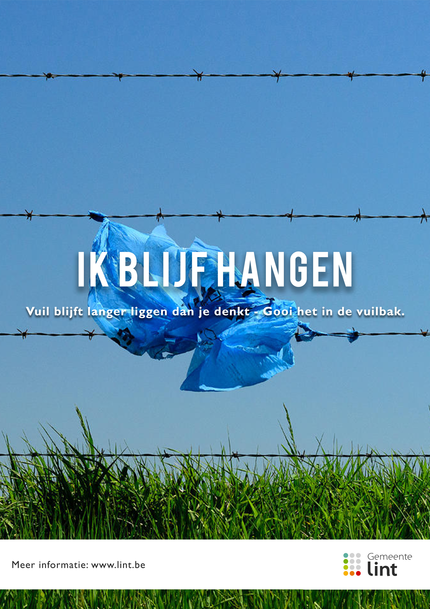
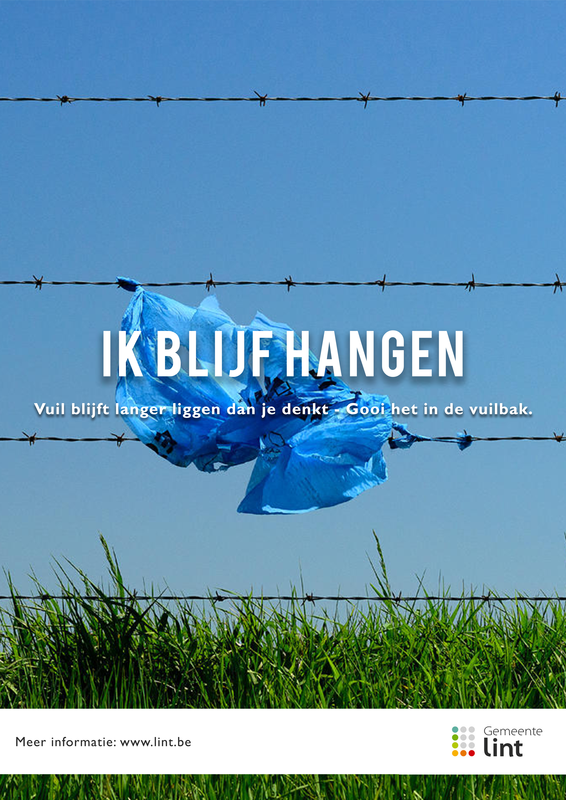

Gemeente Lint
Poster design + communicatie
Het doel van deze campagne is om zwerfvuil in de gemeente Lint te verminderen. De inwoners van Lint zijn de doelgroep. Bij het zien van deze affiches in het straatbeeld zullen de bewoners beter nadenken alvorens ze iets op de grond gooien. Het duurt namelijk erg lang voordat vuilnis wordt afgebroken en dit heeft een nadelig effect op het milieu en de gemeente.
Deze afbeelding kan gedeeld worden op communicatiekanalen zoals de website en sociale media. Maar het is vooral belangrijk dat er affiches aanwezig zijn in het straatbeeld, aangezien daar de problemen zich voordoen. De poster verwijst naar de website, waar de bewoners meer informatie kunnen vinden over de campagne en de afbraaktijden van zwerfvuil. Ook kunnen ze zelf een poster aanvragen om aan hun raam te plakken.
 

Lint gaat de strijd aan tegen zwerfvuil
LINT, 8 juni 2020 - Het duurt nog geen seconde om iets op de grond te gooien, maar deze actie kan langdurige gevolgen hebben. Een kauwgom die je op de grond gooit, doet er minstens 20 jaar over om af te breken. Gemeente Lint wil zijn inwoners aanmoedigen om daar bij stil te staan.
Zwerfvuil is bij velen de grootste bron van ergernis, ook in de gemeente Lint. Met de campagne “Afval blijft ...” wil Lint zijn bewoners aanmoedigen om na te denken voordat men iets op de grond gooit, afval verdwijnt namelijk niet zomaar. Als het niet opgeruimd wordt, kan het tot 50 jaar duren voordat afval vergaat. Bovendien kost het erg veel geld om zwerfafval op te ruimen, geld van de belastingbetaler dat op een betere manier besteed kan worden. Zwerfafval heeft niet alleen financiële gevolgen, het heeft ook gevolgen voor het milieu en straatbeeld. En geef nu toe, jij woont toch ook veel liever in een propere buurt?Ga samen met Lint de strijd tegen zwerfafval aan en gooi je afval in de vuilbak!
Wil jij ook je straat proper houden? Bestel dan je gratis poster op www.lint.be.